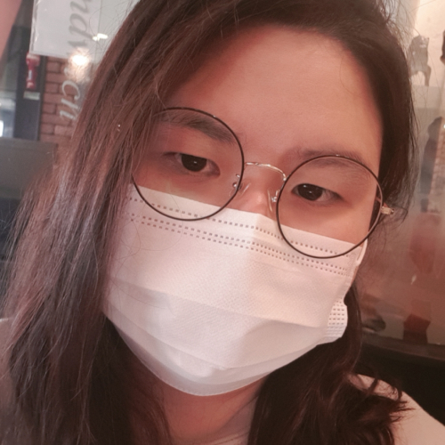

내 컴퓨터
안녕하세요, 안산에서 프론트엔드 웹 디자인의 세계에 푹 빠진 26세 최 선화입니다. HTML, CSS, JavaScript를 포함한 다양한 웹 디자인 기술을 전문적으로 다루며, 새로운 기술을 배우고 도전하는 것을 진심으로 즐깁니다. 비록 이해하는 데 시간이 조금 더 걸릴지라도, 저는 포기하지 않고 끈기 있게 배움을 이어가며 원하는 목표를 달성하기 위해 노력합니다.
학창 시절, 문학과 운동에 열정을 쏟으며 다양한 대회에 참여해왔습니다. 이후 성인이 되어서는 새로운 분야에 도전하는 것을 두려워하지 않았고, 네일 아트에 매료되어 자격증을 취득한 뒤 프리랜서로서의 길도 걸어보았습니다. 각기 다른 분야에서의 경험은 저에게 다양성의 가치와 유연한 사고방식을 심어주었습니다. 그러나 저의 여정은 순탄치만은 않았습니다. 21살이 되던 해, 메니에르병이라는 희귀 질환을 진단받았고, 이후 2년 간의 치료를 거쳤습니다. 일상으로의 복귀를 꿈꾸던 찰나, B형 독감과 연이은 건강 문제로 다시금 시련에 직면했습니다. 이러한 경험은 저에게 체력의 중요성과 함께, 진정으로 원하는 삶의 방향에 대해 심도 깊게 고민할 기회를 제공했습니다. 시간을 돌아볼 수 있는 공백기가 있었지만, 저는 그저 현 상황에 안주하기보다는 더 나아가고자 했습니다. 통원 치료를 받는 동안에도 꾸준히 운동을 이어가며 체력을 다시금 강화했고, 이제는 어릴 적부터 꿈꿔왔던 개발자의 길을 걷고자 합니다. 다양한 삶의 경험을 통해 얻은 교훈과 강인한 의지는 저를 개발자로서 더욱 성장하게 할 것입니다. 이전의 길을 깊게 파고들기보다는, 새로운 도전을 선택한 이유는 제가 직면한 어려움들을 극복하며 발견한 더 깊은 자아와 열정 때문입니다. 개발자로서의 새로운 여정에서도, 저는 지금까지 그래왔듯이 어떠한 어려움도 극복해 나갈 준비가 되어 있습니다.